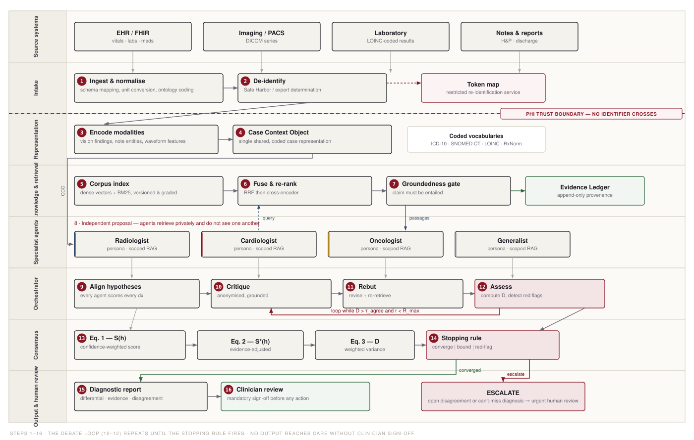

Persona-conditioned language-model specialists reason independently over a patient case, ground every claim in retrieved literature, and are driven toward a calibrated, auditable diagnosis through structured debate — escalating to a clinician when they cannot reconcile, or when a can't-miss diagnosis is in play.
30 slides, every figure embedded. Runs in the browser, works offline.
Open the deck →Architecture, formalism, evaluation, failure modes, appendices.
Read the paper →The runnable system. Python 3.9+, no dependencies, deterministic.
Browse the code →14 vector figures and the generator that produces them.
See the figures →
| Case | Reference diagnosis | Leading S* | Rounds | Disposition |
|---|---|---|---|---|
CASE-001 | Primary lung malignancy | 0.79 ✓ | 4 | escalated — can't-miss |
CASE-002 | Benign pulmonary granuloma | 0.59 ✓ | 2 | converged |
CASE-003 | Acute coronary syndrome | 0.55 ✓ | 1 | escalated — can't-miss |
Three cases exercising all three stopping paths. Top-1 3/3 · 130/130 claims passed the groundedness gate · 91 ledger citations · ECE 0.243 — poor, and reported as a negative result: the aggregation weights are hand-set, not fitted.
git clone https://github.com/zyaanop/ppt.git && cd ppt/medjar
cd prototype && python3 run_demo.py # run the system
python3 verify_llm_path.py # verify the LLM path offline
cd ../figures && python3 make_figures.py # regenerate all 14 figures
cd .. && python3 build_deck.py # rebuild this deck
To run the specialists on a
real model: run_demo.py --engine llm --provider openai|anthropic|ollama.
Building the system exposed four failure modes. The significant one: agents holding no prior in a diagnosis's domain were initially able to raise objections using their own ignorance as the comparison. Three agents with no cardiology competence drove a correct acute coronary syndrome diagnosis from S* 0.84 to 0.27 — below the escalation threshold — so the case converged instead of escalating, manufacturing exactly the false reassurance the system exists to prevent.